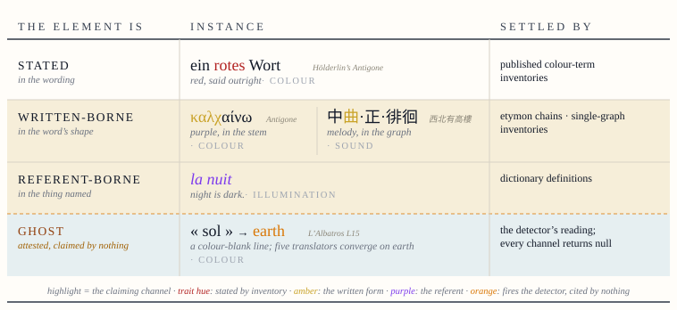
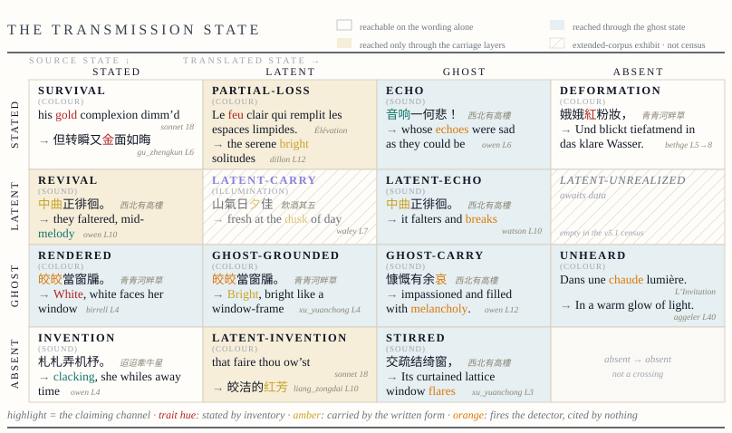
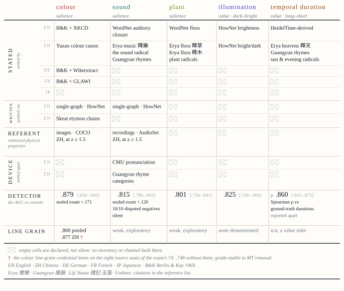
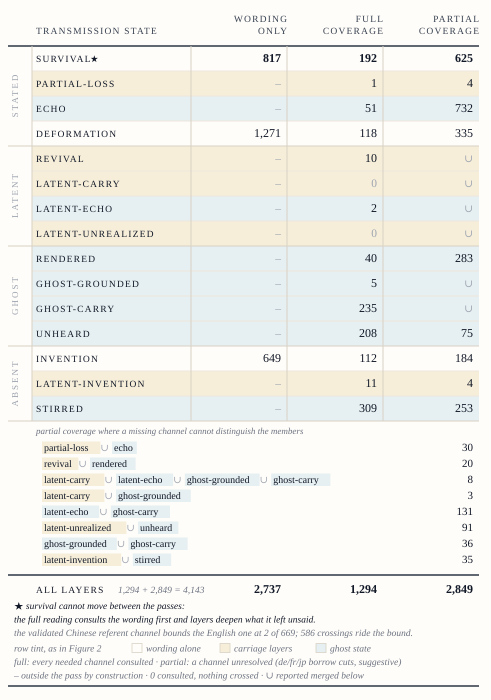
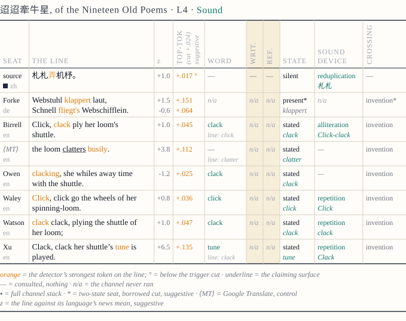

Translation theory has returned repeatedly to the layer that carries a text's felt shape, while the computational stack measures only correspondence and conformity to target norms. Under measurement the layer resolves into strata: what a line states; what its written form bears; what its referents carry; and the ghost, the reflective layer on record, ignited with no citation at all. STRATA instruments these strata: its element set arose from open annotation, four readers marking blind; every state carries a citable receipt; every detector fire is traced to the channel that carries it. Scored across sixty-four seat-pairs in five languages, once on wording alone and once with all layers, 2,577 verdicts in 4,143 change: convictions re-explained, crossings scored that wording alone cannot see. The loom line of the Nineteen Old Poems is silent in every inventory, yet six translators and one machine write its clatter down.
Translation theory has returned under successive names to one layer of the text: Benjamin separated das Gemeinte from die Art des Meinens (Benjamin 1996, 257), and Berman's negative analytic itemised twelve deforming tendencies, among them the destruction of rhythms (Berman 2000). Meschonnic pressed furthest, holding that "more than what a text says, it is what a text does that must be translated" (Meschonnic 2011, 69). Ricœur reframed it around a renunciation, a good translation aiming only at "an equivalence without identity", and what follows the mourning of the perfect translation is linguistic hospitality (Ricœur 2006, 21–23). Apter made the residue political, activating untranslatability as a theoretical fulcrum (Apter 2013). Each return names a cell of the comparator built below, and under measurement the layer resolves into strata: hence the name.
For centuries the layer was argued, never measured. Measurement arrived with the machine and built a stack that asks how close and how correct: encoders trained to minimise the distance between a source sentence and its published rendering (Feng et al. 2022), and error typologies that define style as deviation from specification (Lommel et al. 2014). On literary text the gap turned glaring, where post-editing leaves lexical richness impoverished and creativity constrained (Toral and Way 2018; Vanmassenhove et al. 2021; Guerberof-Arenas and Toral 2022). The deeper trouble is common to human and machine: no construct in the stack records what happens to the layer. Measured as distance and deviation, carriage, recovery and addition are invisible, or count as infidelity.
Three grounds locate the gap. Translation drifts towards the habitual, Toury's law of growing standardisation (Toury 1995, 267–74), and from such practice the equivalence geometry distills, the practice's losses learned as tolerances. The embeddings already see the layer, for concreteness and imageability are predictable from them across languages (Ljubešić et al. 2018); downstream use reads a single similarity from them, and raw cosine overstates even that (Ethayarajh 2019). Whether the rendering reissues what the wording does is recorded nowhere.
Kant located the mediation between concept and intuition in the schema, a general procedure of imagination for providing a concept with its image, itself a rule (Critique of Pure Reason, A140–41/B179–80). Ruthrof generalises the doctrine to language: meaning is constituted by communicable imaginability, language being schematised social instructions for imagining a world, warranted by Kant's Mitteilbarkeit (Ruthrof 2024; Critique of Judgement §9). Where a determinate rule gives out, judgement turns reflective, subsuming particulars under provisional umbrellas, and there Kant assigns the sensus communis its maximal role (Ruthrof 2021; §40). Zhao argues from Hölderlin's Antigone that translational form can externalise into the material of the text an operation Kant assigned to the judging subject (Zhao 2026). A reader's judgement need not exhibit its result, while a translator's must, in the wording of the rendering. Where no determinate rule reaches what the source carries, the reflective judgement that supplies one is exhibited in the material of the text, and so becomes available to examination. The analogue is this act of exhibition: καλχαίνω itself remains a citable, written-borne element.
H1, determination. A schema is a rule, hence communicable in principle. The question is how far a particular wording determines it. Where determination reaches, independent readers converge on the instruction; where it gives out, they diverge. The edge of agreement is the boundary of determination.
H2, carriage. An element travels by one of three channels: what a word means, how it is written, or what it names (Figure 1). The three part under translation: referent carriage survives by default, written carriage dies at a script boundary unless the translator compensates, and what the wording states survives at the translator's discretion.
H3, asymmetry. What was carried and then stated has been revived; what was stated and then dropped has been deformed, in Berman's sense; what was absent and then stated has been invented. Revival alone we single out as gain: on Zhao's account it is the paradigm of translation disclosing what lies beyond discursive rendering (Zhao 2026).
H4, ignition. An element may ride nothing citable at all, yet still be attested. This paper calls the reflective event itself ignition. In Kant, the event is the animating principle in the mind presenting an aesthetic idea (Critique of Judgement §49). Where determination gives out, the attestation stands unclaimed by any channel: a fourth state, the ghost, ungrounded and entered among the findings.

The four conditions of a schema element, with attested instances and traits.
STRATA is this paper's instrument for the unmeasured layer. Two rules govern every state it records: (1) every judgement issues from a reader, a published inventory, or a fixed instrument, and that source is the state's citable receipt; (2) no generative judge is admitted, since one trained on the translation record would import the very tolerances at issue.
The element set is discovered. A prepared checklist would limit it to the designers' imagination and contaminate the first hypothesis. Four readers marked poems across the corpus pool line by line, in their own vocabulary, blind to one another; their labels were merged on mechanical criteria, where readers collided on the same lines and their values agreed. The fields that caught the readers' attention became the five elements: colour, illumination, sound, plant and temporal duration. The readers' role ends there.
A line is read whole and probed word by word. The detectors are directions in a multilingual embedding space (LaBSE; Feng et al. 2022), anchored by documented probe words. A word is triggered when deleting it shifts the detector's reading of the line past a threshold fixed from controls. Triggered words alone are probed: against the published inventories for the stated word, one per trait and language (Figure 3), for written carriage and, when the reading is strong, for referent carriage. Each attribution stays bound to the word that fired. When every probe returns null, the word is recorded as a ghost, its receipt the firing beside the null returns. Word verdicts fold to a line state by fixed precedence, and the comparator of fifteen cells crosses source state against translated state (Figure 2).

The comparator's fifteen cells, source state against translated state, one census-attested crossing each, claiming words highlighted.
The instruments are calibrated on matched controls, lines where the answer is known. Each axis takes its trigger cut from the controls, at the ninety-fifth percentile of their movements. The cuts were registered before the run. Salience axes cut one-sided, value axes two-sided. The colour and sound detectors also passed sealed examinations on held-out items, telling true positives from disputed negatives. Colour's cut is adopted outright at the word grain, and colour alone clears the line grain; the rest stand as suggested boundaries. Every credential and grade reads from Figure 3.

What settles and probes each trait, by language and channel, with each detector's credential.
The corpus is nine sources: Shakespeare's Sonnets 73 and 18, three of the anonymous Nineteen Old Poems of the Han, and four poems of Baudelaire. The sources are poems by design, for a line packs much into few words, and a celebrated poem carries many independent renderings, the shape the first hypothesis needs. Each source and each of its renderings, in English, Chinese, German, French and Japanese, holds one seat; the census counts eighty-four human seats, with three machine-translation seats standing as declared controls. Sonnet 73, busiest of the marked poems, served as development pilot and stands apart from the census. A pair sets one rendering against its source; a comparison is one pair on one element. Channel coverage grades by language (Figure 3), and states are labelled to their coverage.
Each run is registered before it begins, and every input is hash-pinned. Scoring runs the detectors and probes over every line of every seat; encoder passes replay in shuffled order and must agree within 1e-6. The scores organize by board, one source with its seats. The census is eight boards, sixty-four comparable pairs and 4,143 line-grain comparisons under determinism certificates of 0.0.
H1. The renderings, spanning five languages and a century, are independent readers, and the corpus answers the first hypothesis through them. The fifteenth line of L'Albatros is colour-blank three ways: no word states colour, no token fires the detector, and the line reads negative. Nine of ten renderings bring colour to the line; four stir it, and the five English seats state the same earth. The geometry is distilled from the record of human reading.
H2 to H4. The census is scored twice, once on wording alone and once with all layers; between the passes 2,577 verdicts in 4,143 change, each landing in a cell the wording alone cannot reach (Table 1). The full reading resolves them in the construct's direction: 793 wording-pass deformations prove echoes and 25 prove partial losses, thirty reported merged in Table 1; 343 wording-pass inventions prove renderings of a source-side attestation and 10 prove revivals, so recovery outnumbers addition where a translator states what no inventory of ours can find stated. On colour, the axis with the line-grain credential, the full reading re-explains most wording-pass verdicts; 16 deformations and 26 inventions remain as loss and addition.
The census at the grain of the line: the wording pass beside the full reading, split by coverage.

The loom line of the tenth of the Nineteen Old Poems is word-tier silent. The claim here is convergence, and all seven translation seats bring the clatter back. Six state it to the inventory: clack, clack, click, clack, tune, and the machine control's the loom clatters busily. The seventh, Forke's German, fires the detector hardest of all, Webstuhl klappert laut, where no inventory of ours runs (Figure 4).

The loom line, every seat.
Where the graphs of the fifth carry sound the wording never states, the renderings converge without conferring, five of six writing the tune down at the mid-song's hovering (Figure 2, revival).
The unheard cell is not a machine artifact. Of its 374 crossings, 346 come from the 72 human seats. The three machine controls contribute 28, compared to nothing.
STRATA supplies the record no construct in the computational stack kept. Three claims follow. First, the construct is new. No cited operationalization of explicitation (Klaudy and Károly 2005; Becher 2011; Olohan and Baker 2000; Han et al. 2023; Osmelak et al. 2026) combines (a) the grain of the line on poetic text, (b) recovery against addition as the primary axis, and (c) every fire traced to the channel that claims it. STRATA combines all three, and the embedding is never asked as an oracle. Second, the element set is open. Four readers discovered it blind, and no checklist bounded it. Third, the reflective layer is on record. The fourth state enters attestation with a receipt and no claim. The layers re-read 2,577 verdicts in 4,143, and every number replays from hash-pinned inputs.
Meschonnic's objection stands where he put it, since the unit of the poem is the poem and a discrete element set falls short of the continuum of speech. STRATA answers him on his own terms, for what a wording determines it scores, and what ignites only in the reader it records as attestation, so that when six translators across a century voice the same unstated element at the same line, the reflective layer has left the judging subject and entered the record.
Read through Apter, the unheard cell is measured untranslatability: 374 crossings, 208 of them at full coverage. Read through Ricœur, a survival report is an inventory of what crossed and what stayed. A ghost is known only by the ignitions it causes; a rendering is an ignition written down.
Apter, Emily. 2013. Against World Literature: On the Politics of Untranslatability. London: Verso.
Becher, Viktor. 2011. Explicitation and Implicitation in Translation: A Corpus-Based Study of English-German and German-English Translations of Business Texts. PhD diss., Universität Hamburg.
Benjamin, Walter. 1996. Selected Writings, Volume 1: 1913–1926. Edited by Marcus Bullock and Michael W. Jennings. Cambridge, MA: Belknap Press.
Berlin, Brent, and Paul Kay. 1969. Basic Color Terms: Their Universality and Evolution. Berkeley: University of California Press.
Berman, Antoine. 2000. "Translation and the Trials of the Foreign." Translated by Lawrence Venuti. In The Translation Studies Reader, edited by Lawrence Venuti, 284–297. London: Routledge.
Carnegie Mellon Speech Group. The Carnegie Mellon Pronouncing Dictionary. Pittsburgh: Carnegie Mellon University. https://github.com/cmusphinx/cmudict (accessed 30 July 2026). Releases through version 0.4 (1995) were compiled by Robert L. Weide.
Chen Pengnian 陳彭年 et al., comp. 1008. Da Song chongxiu Guangyun 大宋重修廣韻. Critical edition by Zhou Zumo 周祖謨, Guangyun jiaoben 廣韻校本. Beijing: Zhonghua shuju, 1960. Digital text: nk2028, tshet-uinh-data (CC0-1.0), https://github.com/nk2028/tshet-uinh-data, commit 21585e2 (accessed 14 July 2026).
Dong, Zhendong, and Qiang Dong. 2006. HowNet and the Computation of Meaning. Hackensack, NJ: World Scientific.
Erya zhushu 爾雅注疏. Commentary by Guo Pu 郭璞, subcommentary by Xing Bing 邢昺. In Shisanjing zhushu fu jiaokanji 十三經注疏附校勘記, edited by Ruan Yuan 阮元. Reprint, Beijing: Zhonghua shuju, 1980.
Ethayarajh, Kawin. 2019. "How Contextual Are Contextualized Word Representations? Comparing the Geometry of BERT, ELMo, and GPT-2 Embeddings." In Proceedings of EMNLP-IJCNLP 2019, 55–65.
Fellbaum, Christiane, ed. 1998. WordNet: An Electronic Lexical Database. Cambridge, MA: MIT Press.
Feng, Fangxiaoyu, Yinfei Yang, Daniel Cer, Naveen Arivazhagan, and Wei Wang. 2022. "Language-Agnostic BERT Sentence Embedding." In Proceedings of ACL 2022, 878–891.
Gemmeke, Jort F., Daniel P. W. Ellis, Dylan Freedman, Aren Jansen, Wade Lawrence, R. Channing Moore, Manoj Plakal, and Marvin Ritter. 2017. "Audio Set: An Ontology and Human-Labeled Dataset for Audio Events." In Proceedings of ICASSP 2017, 776–780.
Guerberof-Arenas, Ana, and Antonio Toral. 2022. "Creativity in Translation: Machine Translation as a Constraint for Literary Texts." Translation Spaces 11 (2): 184–212.
Han, HyoJung, Jordan Boyd-Graber, and Marine Carpuat. 2023. "Bridging Background Knowledge Gaps in Translation with Automatic Explicitation." In Proceedings of EMNLP 2023, 9718–9735.
Hathout, Nabil, and Franck Sajous. 2016. "Wiktionnaire's Wikicode GLAWIfied: A Workable French Machine-Readable Dictionary." In Proceedings of LREC 2016, 1369–1376.
Hölderlin, Friedrich. 1804. Die Trauerspiele des Sophokles. Frankfurt am Main: Friedrich Wilmans.
Kant, Immanuel. 1998. Critique of Pure Reason. Translated and edited by Paul Guyer and Allen W. Wood. Cambridge: Cambridge University Press.
Kant, Immanuel. 2007. Critique of Judgement. Translated by James Creed Meredith, revised by Nicholas Walker. Oxford: Oxford University Press.
Klaudy, Kinga, and Krisztina Károly. 2005. "Implicitation in Translation: Empirical Evidence for Operational Asymmetry in Translation." Across Languages and Cultures 6 (1): 13–28.
Liji zhengyi 禮記正義. Commentary by Zheng Xuan 鄭玄, subcommentary by Kong Yingda 孔穎達. In Shisanjing zhushu fu jiaokanji, edited by Ruan Yuan 阮元. Reprint, Beijing: Zhonghua shuju, 1980.
Lin, Tsung-Yi, Michael Maire, Serge Belongie, James Hays, Pietro Perona, Deva Ramanan, Piotr Dollár, and C. Lawrence Zitnick. 2014. "Microsoft COCO: Common Objects in Context." In Computer Vision – ECCV 2014, 740–755. Cham: Springer.
Ljubešić, Nikola, Darja Fišer, and Anita Peti-Stantić. 2018. "Predicting Concreteness and Imageability of Words Within and Across Languages via Word Embeddings." In Proceedings of RepL4NLP 2018, 217–222.
Lommel, Arle, Hans Uszkoreit, and Aljoscha Burchardt. 2014. "Multidimensional Quality Metrics (MQM): A Framework for Declaring and Describing Translation Quality Metrics." Tradumàtica 12: 455–463.
Lunde, Ken, ed. 2025. UAX #38: Unicode Han Database (Unihan), revision 39, version 17.0.0. Unicode Consortium. https://www.unicode.org/reports/tr38/tr38-39.html (accessed 18 July 2026).
Meschonnic, Henri. 2011. Ethics and Politics of Translating. Translated and edited by Pier-Pascale Boulanger. Amsterdam: John Benjamins.
Munroe, Randall. 2010. "Color Survey Results." xkcd blog, 3 May 2010. https://blog.xkcd.com/2010/05/03/color-survey-results/ (accessed 30 July 2026).
Olohan, Maeve, and Mona Baker. 2000. "Reporting that in Translated English. Evidence for Subconscious Processes of Explicitation?" Across Languages and Cultures 1 (2): 141–158.
Osmelak, Doreen, Koel Dutta Chowdhury, Uliana Sentsova, Cristina España-Bonet, and Josef van Genabith. 2026. "PETra: A Multilingual Corpus of Pragmatic Explicitation in Translation." In Proceedings of LREC 2026, 8756–8766. Paris: European Language Resources Association.
Ricœur, Paul. 2006. On Translation. Translated by Eileen Brennan. London: Routledge.
Ruthrof, Horst. 2021. "Reflective-Teleological Judgment as Indeterministic Subsumption: Kant and Modern Hermeneutics." Analysis and Metaphysics 20: 31–49.
Ruthrof, Horst. 2024. "What Makes Natural Language 'Natural'? A Phenomenological Proposal." Journal of the British Society for Phenomenology 55 (4): 359–377.
Skeat, Walter W. 1888. An Etymological Dictionary of the English Language. 2nd ed. Oxford: Clarendon Press.
Sophocles. 1891. Sophocles: The Plays and Fragments, Part III: The Antigone. 2nd ed. Edited and translated by Richard C. Jebb. Cambridge: Cambridge University Press.
Strötgen, Jannik, and Michael Gertz. 2013. "Multilingual and Cross-Domain Temporal Tagging." Language Resources and Evaluation 47 (2): 269–298.
Toral, Antonio, and Andy Way. 2018. "What Level of Quality Can Neural Machine Translation Attain on Literary Text?" In Translation Quality Assessment: From Principles to Practice, edited by Joss Moorkens, Sheila Castilho, Federico Gaspari, and Stephen Doherty, 263–287. Cham: Springer.
Toury, Gideon. 1995. Descriptive Translation Studies and Beyond. Amsterdam: John Benjamins.
Vanmassenhove, Eva, Dimitar Shterionov, and Matthew Gwilliam. 2021. "Machine Translationese: Effects of Algorithmic Bias on Linguistic Complexity in Machine Translation." In Proceedings of EACL 2021, 2203–2213.
Ylonen, Tatu. 2022. "Wiktextract: Wiktionary as Machine-Readable Structured Data." In Proceedings of LREC 2022, 1317–1325.
Zhao, Xiaochen. 2026. "Recalibrating the Noumenal: Hölderlin's Translational Intervention at the Kantian Boundary and Its Afterlife in Benjamin and Heidegger." The Journal of Speculative Philosophy 40 (3): 284–296. https://doi.org/10.5325/jspecphil.40.3.0284.